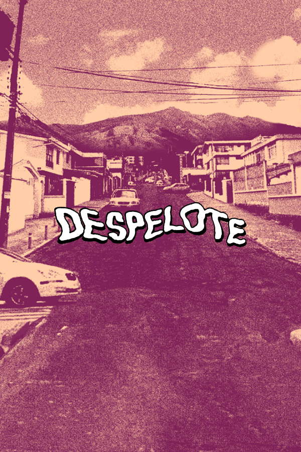

Despelote
Every archived year-end list appearance, including placement and points earned.
About the Game
despelote is a soccer game about people. Get immersed in the streets and parks of Quito through the eyes and ears of eight year old Julián. Dribble, pass and shoot your soccer ball around town, and see what happens when you kick it someone's way. Feel the city change as Ecuador comes closer than ever to qualifying for the World Cup. Features: A bittersweet and sometimes dreamy semi-autobiographical tale of youth.Explore a dense town space at your leisure, full of activities, interactions, and mischief to get up to.A physics-based soccer ball that feels good to kick around in a first-person perspective.A vibrant world full of characters that have funny, and genuine conversations. Photos and audio recorded on location in Ecuador are used to create a strong sense of place.
| Released | 2025-05-01 |
|---|---|
| Developer | Julián Cordero, Sebastian Valbuena |
| Publisher | Panic |
| Genres | Action, Adventure, Sports |
| Platforms | PC |
SingleplayerFull controller supportStory RichFirst-PersonFunnyExplorationSandbox3DCinematicWalking SimulatorStylizedHand-drawn
Where to Buy
Game information provided by RAWG.
Points by Year
List History
| Year | Source | List | Placement | Points |
|---|---|---|---|---|
| 2025 | Eurogamer | The 50 best games of 2025, ranked | 4 | 5 |
| 2025 | Geeky Brummie | Top 50 Most Notable Games of 2025 | 17 | 3 |
| 2025 | GQ | The 20 Best Video Games of 2025 | 6 | 5 |
| 2025 | Inverse | The 25 Best Games Of 2025, Ranked | 10 | 5 |
| 2025 | Kotaku | The 12 Best Video Games Of 2025 | 2 | 8 |
| 2025 | NPR | The best games of 2025, picked by NPR's staff | Unranked | 1 |
| 2025 | Polygon | The 50 best games of 2025, as chosen by Polygon | 3 | 6 |
| 2025 | Rolling Stone · Christopher Cruz | The 25 Best Video Games of 2025 | 19 | 3 |
| 2025 | Slant Magazine | The Best Video Games of 2025 | 4 | 5 |